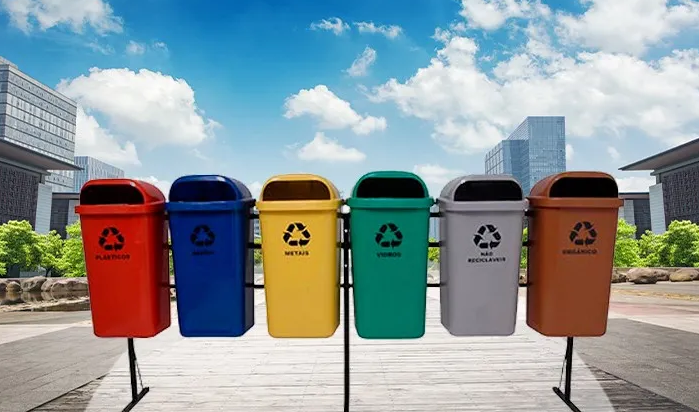
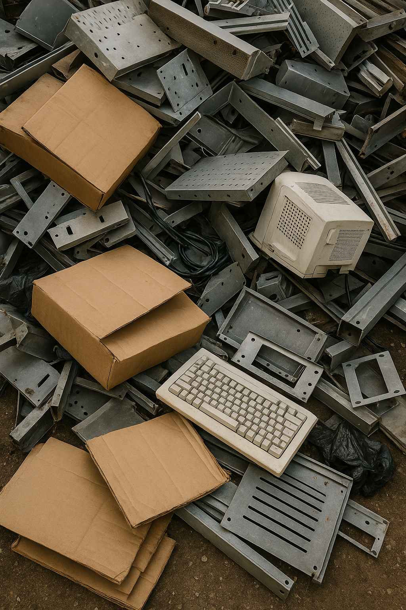
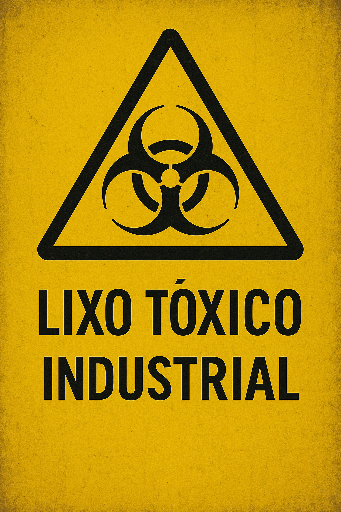
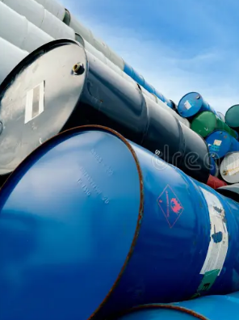
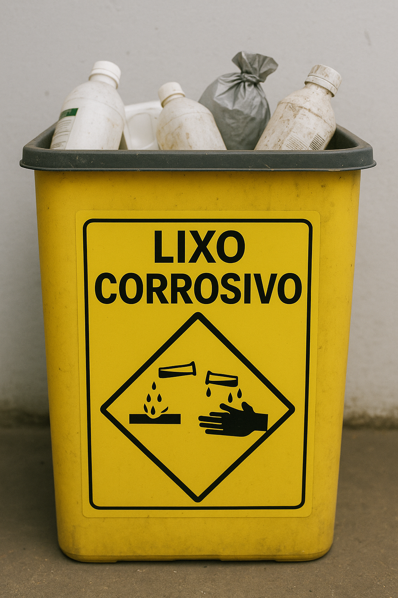
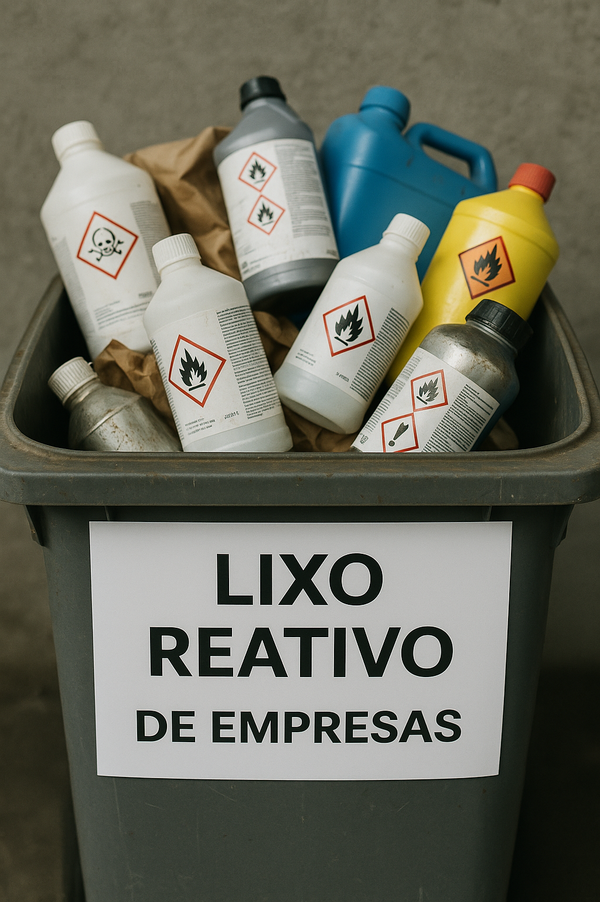

Tipos de resíduos químicos
Os resíduos químicos são substâncias perigosas geradas em processos laboratoriais, industriais ou hospitalares. Podem ser tóxicos, corrosivos, inflamáveis ou reativos. O descarte incorreto contamina solo, água e afeta a saúde humana. Classificam-se em inorgânicos, tóxicos, inflamáveis e corrosivos. É essencial o manejo adequado, com coleta, identificação e tratamento específicos para evitar danos ambientais e sociais.

Lixo inorgânico

Resíduos químicos inorgânicos são substâncias que não possuem carbono como componente principal. Eles incluem metais pesados (como chumbo e mercúrio), sais, ácidos e bases fortes. Esses resíduos podem ser corrosivos, tóxicos e altamente poluentes, afetando gravemente a água, o solo e organismos vivos. O descarte inadequado pode causar danos ambientais e à saúde pública, por isso exigem tratamento e destinação final adequada conforme normas ambientais específicas.
Lixo orgânico
O lixo orgânico inclui restos de alimentos, cascas de frutas, verduras, podas de jardim e outros resíduos biodegradáveis. Quando descartado corretamente, pode ser compostado, transformando-se em adubo natural para plantas. No entanto, em aterros comuns, sua decomposição gera chorume (líquido poluente) e metano (gás do efeito estufa). A separação adequada e a compostagem caseira ou industrial reduzem impactos ambientais e enriquecem o solo.
- Origem: restos alimentares e materiais vegetais
- Problemas: geração de chorume e gases poluentes
- Solução: compostagem industrial usando recicladoras
Lixo tóxico

Resíduos químicos tóxicos são substâncias que, mesmo em pequenas quantidades, podem causar sérios danos à saúde humana, animal e ao meio ambiente. Eles incluem metais pesados como chumbo, mercúrio e cádmio, além de pesticidas, solventes e certos reagentes laboratoriais. Esses resíduos podem contaminar o solo, a água e o ar, e muitas vezes se acumulam nos organismos vivos, provocando efeitos a longo prazo. Por isso, exigem armazenamento, transporte e descarte extremamente cuidadosos, seguindo normas ambientais rigorosas.
Lixo inflamável

O lixo inflamável inclui materiais que podem pegar fogo facilmente, como solventes, produtos químicos, óleos, tintas, gases comprimidos e certos resíduos industriais. Seu descarte incorreto causa incêndios, poluição do ar e contaminação do solo e da água. Exige armazenamento em recipientes específicos e tratamento especializado. A legislação ambiental regula seu manejo para evitar acidentes e danos à saúde pública. Empresas devem seguir normas de segurança, como a NBR 10.004, e encaminhar esses resíduos para incineração controlada ou reciclagem segura. A conscientização e o descarte adequado são essenciais para reduzir riscos ambientais.
Lixo corrosivo

O lixo corrosivo inclui ácidos, bases fortes e substâncias que corroem metais ou tecidos, como baterias, produtos de limpeza industrial e resíduos químicos. Seu manuseio inadequado danifica o meio ambiente, contaminando solo e água, e causa queimaduras graves em humanos. Requer armazenamento em recipientes resistentes e identificados. A legislação (como a NBR 10.004) exige tratamento especial, como neutralização ou encapsulamento, antes do descarte. Empresas devem adotar práticas seguras e destinar esses resíduos a aterros específicos ou reciclagem controlada. A prevenção de acidentes depende de fiscalização e educação ambiental.
Lixo reativo

Lixo reativo compreende substâncias que reagem violentamente com água, ar ou outros compostos, liberando gases tóxicos, calor ou explosões. Inclui metais alcalinos, peróxidos e resíduos de laboratórios. Seu armazenamento exige recipientes herméticos e ambientes controlados, pois o contato acidental pode causar acidentes graves. A legislação (NBR 10.004) classifica-o como Classe I (perigoso) e exige tratamento especializado, como inertização ou estabilização química. O descarte inadequado contamina ecossistemas e ameaça a saúde pública. Empresas devem seguir normas rigorosas de segurança e destinar esses resíduos a aterros industriais ou processos de neutralização supervisionados.
- Reações perigosas (explosões/gases tóxicos)
- Exemplos: sódio metálico, peróxido de hidrogênio concentrado
- Riscos: contaminação ambiental e acidentes industriais
- Soluções: inertização e aterros controlados